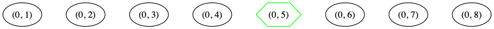
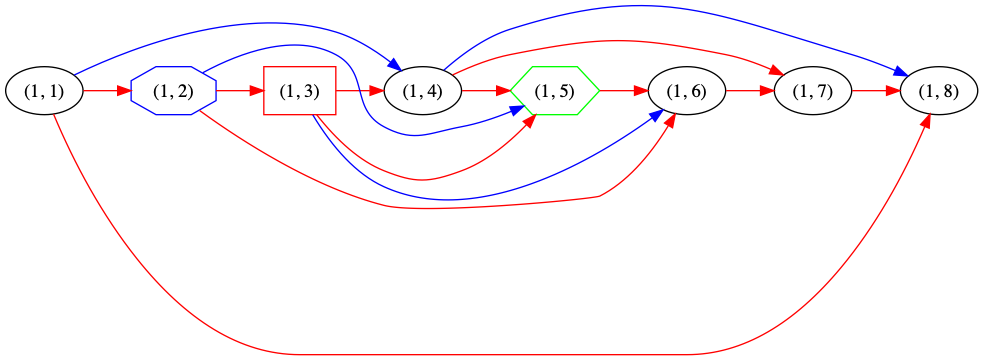
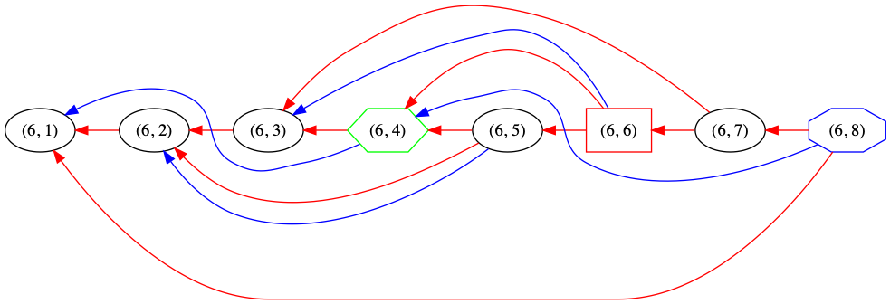

ZigZag Commitments
Table of Contents
1 Introduction
This document provides a simplified visual explanation of the ZigZag Commitment algorithm described in Tight PoS - ZigZag.
It is intended to confer intuition about the algorithm, and to serve as a reference for implementors. The author of this document and those of the linked paper believe the two are consistent; and converging on this consistent design was a third design goal of this document's construction.
2 Graph
Both renumbered (DRG) and reversed (expander) parents are generated by a pseudorandom permutation and are provided only to illustrate the nature of the zigzag commitment scheme. They accurately represent how parent-child relationships change between layers, and are accurate for expander parents. However, this is not representative of the DRG parent selection algorithm.
The following graphs illustrate how the position of challenges, DRG parents, and expander parents change between layers. Only a single DRG parent and a single expander parent are shown. The immediate predecessor parent is shown for graph topology, but it is not tracked in the tables below.
- The challenged node alternates on even and odd layers.
- The DRG parents alternate in the same way.
- The expander parents do not alternate in this way. The edges between nodes and their expander parents are reversed between layers.
2.1 Legend


2.2 Data Layer: \(Comm_D\) Tree

2.3 Replica Column Layers: \(Comm_C\) Tree



2.4 Final Layer: \(Comm_{R_{LAST}}\) Tree

3 Commitment Algorithm
3.1 Goal
We will generate two commitments \(Comm_R, Comm_D\) to be placed on chain.
\(Comm_D\) is the merkle root of the original data.
\(Comm_R = H(Comm_C || Comm_{R_{LAST}})\).
Their construction is described below.
3.2 Definitions and Notation
We will perform \(L\) layers of ZigZag replication over \(n\) labeled nodes.
Merkle roots (commitments) are generated with the vector-commitment function \(VC(…)\).
Hashes are produced with a hash function \(H(…)\), which is not necessarily that used by \(VC(…)\).
\(Comm = VC(l_1,…l_n)\), where the \(l_i\) are the data (labels or hashes) to be committed.
Generated trees are retained until the proving phase, when merkle proofs of a given label's inclusion in \(Comm\) will be created. We will designate such proofs \(l_i \rightarrow Comm\).
We use the notation \(e{_i}^{(l)}\), correlated in the table below with the \((l, i)\) notation used in the graphs above, where \(l\) indexes layers, and \(i\) indexes labels.
| Graph | (1, 1) | (1, 2) | (1, 3) | (1, 4) | (1, 5) | (1, 6) | (1, 7) | (1, 8) |
| Notation | \(e_1^{(1)}\) | \(e_2^{(1)}\) | \(e_3^{(1)}\) | \(e_4^{(1)}\) | \(e_5^{(1)}\) | \(e_6^{(1)}\) | \(e_7^{(1)}\) | \(e_8^{(1)}\) |
| Graph | (2, 1) | (2, 2) | (2, 3) | (2, 4) | (2, 5) | (2, 6) | (2, 7) | (2, 8) |
| Notation | \(e_1^{(2)}\) | \(e_2^{(2)}\) | \(e_3^{(2)}\) | \(e_4^{(2)}\) | \(e_5^{(2)}\) | \(e_6^{(2)}\) | \(e_7^{(2)}\) | \(e_8^{(2)}\) |
…
| Graph | (6, 1) | (6, 2) | (6, 3) | (6, 4) | (6, 5) | (6, 6) | (6, 7) | (6, 8) |
| Notation | \(e_1^{(6)}\) | \(e_2^{(6)}\) | \(e_3^{(6)}\) | \(e_4^{(6)}\) | \(e_5^{(6)}\) | \(e_6^{(6)}\) | \(e_7^{(6)}\) | \(e_8^{(6)}\) |
3.3 Initial Data Layer
~~~~ |
~~~~ |
~~~~ |
~~~~ |
~~~~ |
~~~~ |
Even Challenge | ~~~~ |
| (0, 1) | (0, 2) | (0, 3) | (0, 4) | (0, 5) | (0, 6) | (0, 7) | (0, 8) |
- Vector Commitment
Generate Merkle root for data leaves.
\(Comm_D = VC(D_i)\), where \(D_i = \{e_1^{(0)}, …, e_n^{(0)}\}\).
This example: \(Comm_D = VC(e_1^{(0)}, e_2^{(0)}, e_3^{(0)}, e_4^{(0)}, e_5^{(0)}, e_6^{(0)}, e_7^{(0)}, e_8^{(0)})\).
- Opening
To open \(D_i\), provide a merkle proof \(D_i \rightarrow Comm_D\).
3.4 ZigZag Replica Columns
- Unpartitioned Columns
Odd Expander Parents ~~~~~~~~DRG Parents ~~~~~~~~Challenges Even Expander Parents (1, 1) (1, 2) (1, 3) (1, 4) (1, 5) (1, 6) (1, 7) (1, 8) (2, 8) (2, 7) (2, 6) (2, 5) (2, 4) (2, 3) (2, 2) (2, 1) (3, 1) (3, 2) (3, 3) (3, 4) (3, 5) (3, 6) (3, 7) (3, 8) (4, 8) (4, 7) (4, 6) (4, 5) (4, 4) (4, 3) (4, 2) (4, 1) (5, 1) (5, 2) (5, 3) (5, 4) (5, 5) (5, 6) (5, 7) (5, 8) - Odd Partition
Odd Expander Parents ~~~~~~~~DRG Parents ~~~~~~~~Challenges Even Expander Parents (1, 1) (1, 2) (1, 3) (1, 4) (1, 5) (1, 6) (1, 7) (1, 8) (3, 1) (3, 2) (3, 3) (3, 4) (3, 5) (3, 6) (3, 7) (3, 8) (5, 1) (5, 2) (5, 3) (5, 4) (5, 5) (5, 6) (5, 7) (5, 8) Concatenate and hash rows of column \(i\) to construct \(O_i\).
Column hash \(O_i = H(e_i^{(1)} || e_i^{(3)} || … e_i^{(L-1)})\).
- Even Partition
Odd Expander Parents ~~~~~~~~DRG Parents ~~~~~~~~Challenges Even Expander Parents (2, 8) (2, 7) (2, 6) (2, 5) (2, 4) (2, 3) (2, 2) (2, 1) (4, 8) (4, 7) (4, 6) (4, 5) (4, 4) (4, 3) (4, 2) (4, 1) Concatenate and hash rows of column \(i\) to construct \(E_i\).
Column hash \(E_i = H(e_i^{(2)} || e_i^{(4)} || … e_i^{(L)})\).
- Vector Commitment
Produce the column leaves: \(C_i = H(O_i || E_i)\).
Generate Merkle tree for column leaves:
\(CommC = VC(C_1 || C_2 || … || C_n)\).
- Opening
- To open only odd-layer labels
Reveal all odd-layer labels and prove they hash to \(O_i\) (\(L / 2\) hash proofs). Reveal the \(E_i\) (\(0\) hash proofs).
Note: odd-layer labels of \(C_i\) have index \(i\).
- To open only even layer labels
Reveal all even layer labels and prove they hash to \(E_i\) (\(L / 2\) hash proofs). Reveal the \(O_i\) (\(0\) hash proofs).
Note: even-layer labels of \(C_i\) have index \((N-i)+1\).
- To open all labels
Reveal all labels and prove they hash to \(E_i\) and \(O_i\) as above. (\(L\) hash proofs).
- Then, in every case
- Prove \(H(O_i || E_i) \rightarrow Comm_C\).
- Reveal \(Comm_{R_{LAST}}\) and prove that \(H(Comm_C || Comm_{R_{LAST}}) = Comm_R\).
- To open only odd-layer labels
3.5 Final Replica Layer
~~~~ |
Even Challenge | ~~~~ |
~~~~ |
Even DRG Parent | ~~~~ |
~~~~ |
Even Expander Parent |
| (6, 1) | (6, 2) | (6, 3) | (6, 4) | (6, 5) | (6, 6) | (6, 7) | (6, 8) |
- Vector Commitment
Generate Merkle tree for replica leaves.
\(R_{LAST_i} = e_i^{(L)}\).
\(Comm_{R_{LAST}} = VC(R_{LAST_1} || R_{LAST_2} || … || R_{LAST_n})\).
- Opening
To open \(R_{LAST_i}\),
- Provide a merkle proof \(R_{LAST_i} \rightarrow Comm_{R_{LAST}}\).
- Reveal \(Comm_C\) and prove that \(H(Comm_C || Comm_{R_{LAST}}) = Comm_R\).
3.6 Replica Commitment
Produce \(Comm_R\) from its constituents.
\(Comm_R = H(Comm_C || Comm_{R_{LAST}})\).
4 Opening Commitments for Offline Proof
For use in all challenge proofs, reveal \(Comm_C\) and \(Comm_{R_{LAST}}\) and prove that \(H(Comm_C || Comm_{R_{LAST}}) = Comm_R\).
To prove encoding for a challenged label \(C\) on odd layers \(l_{odd}\) and \(C_{even}\) on even layers \(l_{even}\).
- Let \(C_{even} = (N-C)+1\).
- Initial data layer openings
- Open label for challenged data node \(e_C^{(0)} — using Comm_D\).
- ZigZag replica column openings
- Open all labels in the column containing challenged label — using \(Comm_C\).
- Open all labels in the columns containing challenged label's DRG parents — using \(Comm_C\).
- Open only even labels in the columns containing challenged label's even expander parents — using \(Comm_C\) and \(O_C\).
- Open only odd labels in the columns containing challenged label's odd expander parents — using \(Comm_C\) and \(E_{C_{even}}\).
- Final replica layer openings
- Open all challenged labels (\(e_C^{(L)}\)) and odd challenged parents (any kind) — using \(Comm_{R_{LAST}}\).
- Prove encoding as usual for all odd \(e{_C}^{(l_{odd})}\) and even \(e{_{C_{even}}}^{(l_{even})}\).
5 Opening Commitments for Online Proof
To prove encoding for a challenged label \(C\) in the replica:
- Reveal \(Comm_C\) (which must have been stored along with the replica).
- Open \(Comm_{R_{LAST}}\) from provided \(Comm_R\) by proving that \(H(Comm_C || Comm_{R_{LAST}}) = Comm_R\).
- Provide a merkle proof \(e_C^{(L)} \rightarrow Comm_{R_{LAST}}\).